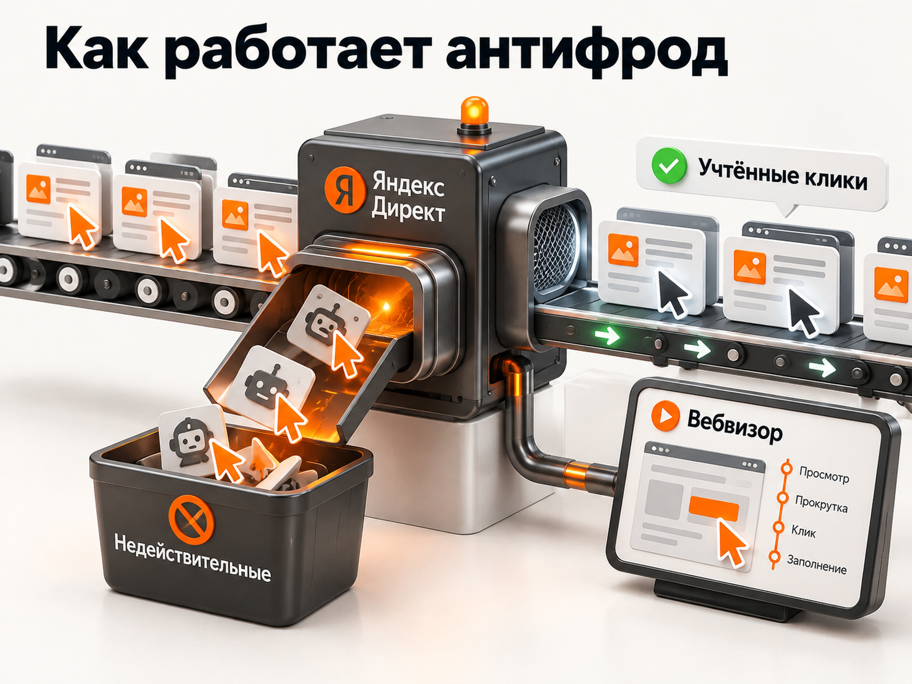

Блог о платном трафике
Боты в РСЯ: как определить бот-трафик и что с ним делать
Чтобы определить ботов в РСЯ, сначала проверьте отчёт «Недействительный трафик» в Яндекс Директе, затем изучите статистику площадок, роботность и поведение посетителей в Яндекс Метрике. Последний этап - сопоставить переходы с реальными заявками и их качеством.
Важно понимать, что не каждый бесполезный переход является ботом. В РСЯ встречаются автоматические клики, случайные нажатия на рекламу, неэффективные площадки и реальные пользователи без интереса к вашему предложению. Для каждой ситуации нужны разные решения.
Откуда берутся боты в РСЯ
Рекламная сеть Яндекса объединяет сайты, мобильные приложения и другие площадки, на которых показываются объявления. Реклама также может размещаться во внешних рекламных сетях.
На практике особенно внимательно я отношусь к мобильным приложениям, играм, развлекательным сервисам и некоторым внешним площадкам. Это не означает, что любое Android-приложение автоматически приводит ботов. В одной тематике приложение может давать нормальные заявки, в другой - случайные переходы и подозрительную активность.
Разделять нужно три проблемы:
- Недействительный рекламный трафик. Автоматические или мошеннические действия, которые могут фильтроваться антифрод-системой Яндекса.
- Некачественный трафик. Реальные пользователи, которые случайно нажимают на объявления или не заинтересованы в продукте.
- Автоматические спам-заявки. Программы, отправляющие данные через формы сайта или непосредственно на сервер, иногда вообще без рекламного перехода.
Если пользователь случайно нажал на баннер в мобильной игре и сразу закрыл сайт, это ещё не доказывает наличие бота.
Поэтому при анализе РСЯ я прежде всего ищу источники, которые системно расходуют рекламный бюджет и не приводят качественных клиентов.
Подробнее о выборе и исключении площадок я рассказал в статье «Минус-площадки для РСЯ: готовый список и чистка трафика».
Как Яндекс Директ защищает рекламу от ботов
В Яндекс Директе действует собственная антифрод-система, которая анализирует подозрительную активность до показа объявления, при клике и после перехода пользователя.
Согласно документации Яндекса, защита работает на нескольких уровнях:
- До показа объявления система может определить подозрительного пользователя и не показывать ему рекламу.
- При сомнительном клике может потребоваться дополнительная проверка.
- После перехода анализ продолжается. Некоторые действия признаются недействительными позднее.
Недействительные клики исключаются из рекламной статистики. Средства за них не списываются либо автоматически возвращаются на рекламный счёт. Фродовые конверсии также исключаются из обучения рекламных стратегий.
Важный момент: подозрительный визит в Вебвизоре не означает, что рекламодатель обязательно заплатил за него.
Вебвизор может фиксировать посещения, которые антифрод Директа уже отфильтровал. Поэтому обнаруженные в нём подозрительные действия нужно сопоставлять с учтёнными кликами в рекламной статистике.
Именно из-за различий в фильтрации количество визитов в общей статистике Метрики и число оплаченных рекламных кликов могут не совпадать.

Как определить ботов в РСЯ через Директ и Яндекс Метрику
Для диагностики бот-трафика нужно проверить не только поведение посетителей, но и факт учёта рекламных переходов, конкретные площадки и качество обращений.
1. Проверьте отчёт «Недействительный трафик»
Откройте Яндекс Директ, перейдите в Библиотеку отчётов и найдите отчёт «Недействительный трафик».
Выберите интересующий период и кампанию. В отчёте можно посмотреть действия, которые система защиты признала недействительными, включая отфильтрованные клики.
Не нужно воспринимать большое количество таких событий как доказательство потери денег. Наоборот, отчёт показывает, что антифрод обнаружил и исключил часть нежелательного трафика.
При этом отчёт не позволяет установить, что весь оставшийся трафик гарантированно качественный.
2. Найдите подозрительные площадки
В Яндекс Директе откройте:
Библиотека отчётов → Оптимизация размещения → Площадки.
Можно также открыть отчёт для конкретной кампании или использовать группировку «Название площадки» в Мастере отчётов.
Я в первую очередь смотрю:
- расход и количество кликов;
- CTR по отдельным площадкам;
- конверсии и стоимость целевого действия;
- динамику показателей;
- качество полученных заявок.
Начинать удобнее с сортировки по расходу. Если площадка потратила незначительную сумму, её анализ редко будет приоритетом. Гораздо важнее проверить источники, которые уже получили заметную долю рекламного бюджета.
Отдельный сигнал - CTR, который значительно выше показателей других площадок при отсутствии нормальных конверсий.
Но высокий CTR сам по себе не доказывает наличие ботов. Причиной могут быть особенности расположения рекламного блока, случайные нажатия или небольшой объём статистики.
3. Проверьте роботность в Яндекс Метрике
Метрика позволяет определить часть роботных визитов по поведению пользователей и техническим признакам.
Для анализа откройте Отчёты → Источники → Директ, площадки. Здесь можно изучить визиты с конкретных рекламных площадок.
В отчётах Метрики также доступны показатель роботности и режимы отображения данных с роботами и без роботов. Сравнение этих данных помогает понять, насколько автоматические посещения влияют на статистику сайта.
Важно учитывать два ограничения.
Во-первых, Метрика и Директ используют разные системы определения роботов. Поэтому обнаруженный Метрикой роботный визит не обязательно совпадает с недействительным кликом в Директе.
Во-вторых, статистика отчётов группы «Директ» в Метрике основана на учтённых рекламных кликах. Это важно при сравнении с общими отчётами по посещаемости.
Роботность в Метрике - диагностический показатель, а не доказательство оплаченного рекламного фрода. Проверять её нужно вместе с источниками трафика, расходами и конверсиями.
Не советую без необходимости включать необратимую фильтрацию роботов по поведению в настройках счётчика. Для обычной диагностики полезнее сохранить возможность сравнивать статистику с роботами и без них.
4. Посмотрите записи Вебвизора
После анализа статистики откройте Вебвизор и изучите подозрительные посещения.
На что обратить внимание:
- множество однотипных коротких визитов;
- отсутствие прокрутки и взаимодействий;
- повторение необычных сценариев поведения;
- быстрое закрытие страницы после перехода;
- регулярные посещения без осмысленных действий;
- отсутствие качественных обращений при большом количестве переходов.
Один короткий визит ничего не доказывает. Пользователь мог случайно нажать на рекламу или быстро понять, что предложение ему не подходит.
Подозрение усиливается, когда одинаковое поведение повторяется на заметном количестве визитов с конкретной площадки.
5. Сопоставьте трафик с реальными заявками
Для бизнеса качество заявок важнее большинства поведенческих показателей.
Площадка может демонстрировать хорошую стоимость конверсии в Директе, но после проверки обращений выясняется, что среди них много недействительных телефонов, повторяющихся контактов и нецелевых запросов.
Особенно опасна ситуация, когда автоматическая стратегия оптимизируется на отправку любой формы, а не на получение квалифицированного лида.
Поэтому при анализе рекламы нужно проверять, какие площадки приводят обращения, сколько из них проходят квалификацию и сколько заканчиваются продажами.
Если используется CRM, полезно сохранять рекламный источник и идентификаторы переходов. Динамические параметры Директа, например `{source}`, `{source_type}` и `{campaign_id}`, позволяют передавать дополнительную информацию о переходе. Её нужно корректно сохранять при отправке заявки.
Подробнее о причинах плохих обращений - в статье «Некачественные лиды из Яндекс Директа».
Какие признаки указывают на ботов в РСЯ
Ни один отдельный показатель не позволяет достоверно определить бот-трафик. Надёжнее оценивать совокупность сигналов.
| Что видно в аналитике | Что это может означать | Что проверить |
|---|---|---|
| Много коротких визитов | Случайные клики, боты или нецелевая аудитория | Вебвизор, источник и действия |
| Аномально высокий CTR | Необычное размещение рекламы, случайные или автоматические клики | Расход, конверсии и площадку |
| Высокая роботность в Метрике | Часть посещений определена как автоматическая | Источники и учтённые клики |
| Есть конверсии, но заявки мусорные | Спам, некорректные цели или некачественная аудитория | CRM, формы и реальные лиды |
| Много визитов без продаж | Проблемы рекламы, сайта или качества аудитории | Воронку и стоимость лида |
| Спам продолжается при остановленной рекламе | Возможна автоматическая отправка заявок без переходов из рекламы | Серверную обработку форм |
Главное - не путать подозрительный сигнал с доказанным фродом. Например, высокий показатель отказов может быть результатом неудачного оффера, а повторяющиеся заявки - следствием технической ошибки формы.
Как проверить конкретную подозрительную площадку РСЯ
Рассмотрим практический порядок диагностики.
Допустим, в отчёте «Площадки» обнаружилось мобильное приложение, которое активно расходует бюджет, имеет необычно высокий CTR и почти не приносит качественных заявок.
Шаг 1. Сравните расходы и конверсии площадки с остальными источниками той же кампании. Учитывайте объём данных и целевую стоимость заявки.
Шаг 2. Проверьте отчёт «Недействительный трафик». Это поможет отделить активность, которую антифрод уже обнаружил, от статистики учтённых переходов.
Шаг 3. Найдите соответствующую площадку в Метрике, изучите роботность, отказы, глубину просмотра и время на сайте.
Шаг 4. Посмотрите в Вебвизоре записи подходящих визитов. Ищите повторяющиеся аномалии, а не один необычный переход.
Шаг 5. Проверьте обращения в CRM. Если есть заявки с площадки, оцените, сколько из них являются квалифицированными.
Шаг 6. Примите решение. Если площадка расходует значимый бюджет, не приносит качественных результатов и поведенческие данные подтверждают проблему, её имеет смысл исключить.
Такой анализ позволяет выявить экономически неэффективную площадку даже тогда, когда невозможно доказать, что все её посетители были ботами.
Что делать с подозрительными площадками РСЯ
Если конкретный сайт или приложение стабильно расходует деньги и не приносит нормального результата, показы на нём можно запретить.
В Директе управление исключениями доступно непосредственно из отчёта «Площадки».
По документации Яндекса для баннерных размещений можно исключить до 1000 доменов, а для видеообъявлений - до 100. Во внешних рекламных сетях можно блокировать отдельные площадки, но не сеть целиком.
При этом массовое отключение мобильных приложений или установка большого чужого списка исключений может ухудшить результаты кампании.
Я не советую отключать площадки только по названию, высокому CTR или нескольким неудачным переходам. Основанием должна быть совокупность данных о расходах, конверсиях и качестве обращений.
Подробную инструкцию по исключению площадок и список для первичной проверки я вынес в отдельную статью.
Как понять, что спам-заявки приходят без РСЯ
Не все автоматические заявки связаны с рекламными кликами. Бот может отправлять запрос непосредственно на серверный обработчик формы, не открывая сам сайт в браузере.
Из-за этого попытки постоянно чистить рекламные площадки могут не приносить результата.
Подозревать такую проблему можно, если:
- спам продолжает поступать после остановки рекламных кампаний;
- количество заявок не соответствует динамике рекламных переходов;
- в Метрике невозможно найти связанные с заявками посещения;
- обращения появляются массово и содержат похожие данные;
- одни и те же контакты отправляются многократно.
Отсутствие визита в Метрике само по себе не доказывает автоматическую отправку. Счётчик может не загрузиться, а часть посещений не фиксируется из-за технических ограничений.
Чтобы подтвердить проблему, нужно сопоставить время заявок с журналами запросов сервера, данными обработчика формы и рекламной статистикой.
Если запросы поступают непосредственно на обработчик формы, проблема находится на стороне сайта. Это повод изучить серверную защиту, а не продолжать блокировать площадки РСЯ.
Как защитить сайт от автоматических заявок
Защита от спам-заявок должна работать не только в интерфейсе формы, но и на серверной стороне.
CAPTCHA помогает ограничить автоматическую отправку, однако бот может попытаться обратиться напрямую к серверному обработчику.
Поэтому обычно используется сочетание нескольких механизмов:
- CAPTCHA или другой механизм проверки;
- проверка данных на сервере;
- ограничение частоты запросов;
- защита от повторной отправки одинаковых данных;
- антиспам-правила;
- дополнительная фильтрация подозрительных запросов.
Если автоматические обращения уже попадают в CRM, их важно отмечать отдельно.
Иначе система аналитики может считать спам успешными заявками, а рекламная стратегия - использовать некорректные сигналы для оптимизации.
Можно ли вернуть деньги за клики ботов в Яндекс Директе
Да, если Яндекс подтвердит, что рекламные клики были недействительными. При автоматическом выявлении такого трафика расходы не учитываются либо возвращаются на баланс рекламного счёта.
Если подозрительная активность осталась среди учтённых переходов, можно обратиться в поддержку Директа.
Для проверки подготовьте:
- Номер рекламного объявления.
- Период подозрительной активности.
- Номер счётчика Яндекс Метрики.
- Ссылки на соответствующие отчёты.
- Дополнительные данные, подтверждающие аномалии.
При этом не каждый нецелевой переход и не каждая некачественная заявка считаются рекламным фродом.
Обычный пользователь, которому не подошёл товар, услуга или цена, не становится ботом только потому, что рекламный переход не принёс бизнесу пользы.
Дополнительно рекомендую изучить статью «Скликивание в Яндекс Директе: как определить и защититься».
Нужен ли отдельный антифрод-сервис для РСЯ
Отдельный антифрод нужен не каждому рекламодателю. У Яндекс Директа уже есть встроенная система защиты, поэтому сначала стоит проверить масштаб оставшейся проблемы.
Если после анализа площадок, проверки качества обращений и защиты сайта подозрительная активность сохраняется, можно рассмотреть дополнительный сервис.
Такие системы помогают изучать поведение пользователей, выявлять необычные переходы и собирать дополнительные сигналы о качестве трафика.
Однако подключение внешнего антифрода само по себе не гарантирует отсутствие ботов или снижение рекламных расходов.
Оценивать его полезность нужно по изменению качества учтённого трафика, затрат и бизнес-результатов, а не только по количеству обнаруженных подозрительных посещений.
Бывают ли боты на поиске Яндекса
Да, автоматический и недействительный рекламный трафик встречается не только в РСЯ. Антифрод-система Яндекса работает и в поисковой рекламе.
Однако причины низкой эффективности поиска и РСЯ могут различаться.
На поиске пользователи вводят конкретные запросы, поэтому при подозрительных переходах стоит дополнительно проверить семантику, условия показа, устройства и географию.
В РСЯ особое внимание уделяется разнообразию рекламных площадок, мобильным приложениям и поведению аудитории после перехода.
Поэтому утверждение, что на поиске всегда находятся реальные заинтересованные пользователи, а в РСЯ преимущественно боты, неправильно.
Не путайте ботов с просто плохой рекламой
Отсутствие заявок из РСЯ ещё не означает, что весь рекламный трафик состоит из ботов.
Причиной могут быть:
- слабое предложение;
- неправильно выбранная аудитория;
- неэффективные рекламные площадки;
- неудобная посадочная страница;
- некорректные цели оптимизации;
- высокая цена относительно конкурентов;
- ошибки обработки обращений;
- недействительный трафик.
Если показатели ухудшились только на нескольких площадках, в первую очередь стоит проверить эти источники.
Если посетители из большинства каналов, включая поиск, не оставляют качественных заявок, необходимо анализировать сайт, предложение и воронку продаж.
Основная задача при работе с РСЯ - не найти максимальное количество предполагаемых ботов, а сократить расходы на некачественный трафик без потери потенциальных клиентов.
Что делать, если подозреваете ботов в РСЯ: чек-лист
Проверку лучше выполнять в следующем порядке:
- Откройте отчёт «Недействительный трафик» в Яндекс Директе и проверьте, что уже отфильтровано.
- Изучите отчёт «Площадки» и найдите основные источники рекламных расходов.
- Проверьте роботность и поведение посетителей в Яндекс Метрике.
- Посмотрите подозрительные посещения в Вебвизоре.
- Сопоставьте рекламную статистику с качеством заявок в CRM.
- Исключите площадки, которые системно расходуют бюджет без нормального результата.
- Если спам приходит независимо от рекламы, проверьте защиту серверной обработки форм.
- При подтверждённых подозрениях на оплаченный фрод обратитесь в поддержку Директа.
Не начинайте с массового отключения приложений, блокировки IP-адресов или покупки дополнительного антифрод-сервиса.
Сначала необходимо определить источник проблемы и выяснить, действительно ли рекламодатель оплачивает подозрительный трафик. Только после этого выбирать способ защиты.